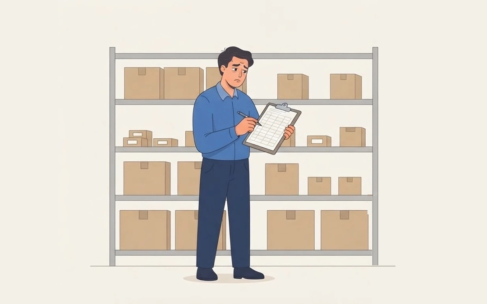
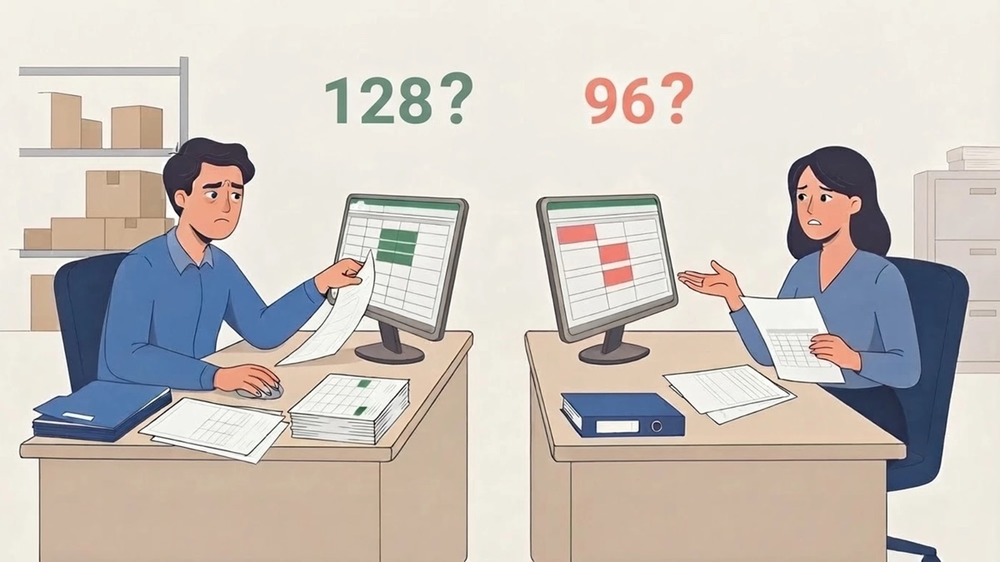

讓掃描不再被打斷的出入庫管理系統
結合條碼機與掃描器的倉儲系統，取代人工與 Excel。上線後我回到現場觀察，發現倉儲人員掃描時根本不看螢幕，於是重新設計欄位焦點的切換邏輯，讓掃描節奏不再被打斷。

問題情境
公司的倉儲作業過去依賴人工與 Excel。需求由 PM 提出，我再向倉儲同仁了解實際使用情境，歸納出三個問題。
步驟繁瑣
以 Excel 管理出入庫，
操作步驟多、效率低。

重複盤點
輸入完成後仍需再盤點確認，
作業時間拉長。

資料不同步
系統未整合，資料無法即時
與財務同步，常有落差。
設計與迭代
第一版｜取代 Excel
用條碼掃描取代手動登錄
第一版結合條碼機與掃描器，以掃描取代手動輸入 Excel，解決了手 key 造成的輸入錯誤。不過掃完品項後，仍需要先點選儲位欄位，再掃描儲位條碼。
- 01點選品項欄位，掃描品項
- 02點選儲位欄位，掃描儲位
- 03點回品項欄位，掃下一筆
第二版｜上線後迭代
讓游標跟著工作節奏走
第一版取代了 Excel，但我到現場觀察後發現，倉儲人員連續掃描時幾乎不抬頭看螢幕，游標停在錯誤的欄位就必須手動切換，節奏一被打斷，輸入錯誤與漏掃就明顯增加。
- 01掃描品項，數量即時累加
- 02掃到清單外品項，即時警示
- 03達 100% 自動跳到儲位
- 04掃完儲位，自動回到品項
為什麼這樣設計
系統雖已數位化，操作流程仍需貼合現場工作習慣，因此從三個面向優化：
- 操作流程：依照「手持掃描器、眼睛確認貨品」的節奏設計焦點切換，減少手、眼與螢幕之間的反覆切換。
- 即時狀態回饋：透過不同聲音與顏色區分三種狀態：一般掃描、品項到齊（可開始掃描儲位）、掃到清單外品項，讓人員不看螢幕也能掌握狀態。
- 掃描規則：考量同品項多數量與不限順序的掃描需求，與工程師討論並確認操作邏輯，兼顧現場效率與系統可行性。
邏輯判斷設計
- 開啟入倉視窗預設聚焦「品項條碼」欄位，不需要點擊
- 掃描品項條碼比對到該品項，已入數量 +1、完成度即時更新
- 掃描順序不限只要在同一張入倉清單內，掃 A 品項途中改掃 B 品項，也會累加到 B，不影響 A 的已入數量
- 掃到不在入倉清單中的品項輸入框變紅並跳出提示，發出與成功不同的連續警示音，數量不累加
- 已入數量＝應入數量（完成度 100%）發出與一般掃描不同的完成提示音，提醒可以開始掃儲位；游標自動跳到該品項的「儲位」欄位，並顯示「請掃描儲位」
- 掃描儲位條碼帶入儲位後，游標自動回到「品項條碼」欄位
- 所有品項完成度 100% 且已填儲位「完成入倉」按鈕才會啟用
成果與過程
作業時間
−20%平均掃描作業時間：16 秒 → 13 秒手動切換
≈0次掃描中不再手動切換欄位使用感受
↑倉儲同仁回饋操作更直覺，不需分心看螢幕就能完成輸入＊由 3 位倉儲同仁實際操作，比較前後兩版的平均作業時間。每個品項都省下切換欄位的點擊，品項越多，節省的時間越多。
設計流程
- 了解使用情境
PM 提出需求後，我向倉儲同仁詢問實際使用情境，整理出步驟繁瑣、重複盤點、資料不同步。
- 第一版系統
結合條碼機與掃描器，以掃描取代手 key，解決輸入錯誤，並即時掌握庫存。
- 回到現場觀察
發現倉儲人員掃描時不看螢幕，游標停錯欄位打斷節奏。
- 重新設計焦點切換
掃描完成後游標自動跳到下一個欄位，連續掃描不中斷。
影響
- 1倉儲人員
操作更直覺，不需分心看螢幕就能完成輸入。
- 2採購與管理層
數據更即時可靠，能更快追蹤庫存。
- 3財務
採購與財務能即時掌握數據，減少溝通往返。
反思
這個專案讓我體會到，系統上線不代表設計完成。回頭看，有兩件事是我最大的收穫：
- 到現場才看得到真正的問題。第一版已經取代 Excel，但直到觀察倉儲人員實際作業，才發現他們掃描時幾乎不看螢幕。數位化之後，流程是否貼合現場，仍需要回到使用情境驗證。
- 回饋要跟著使用者的注意力走。使用者的視線在貨品上，因此我用聲音與顏色區分掃描狀態，減少抬頭看螢幕的次數。
好的系統不只是把流程數位化，而是讓使用者專注在手上的工作。